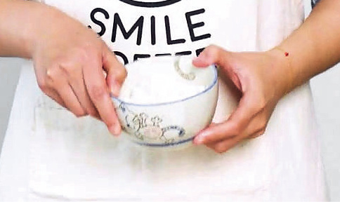
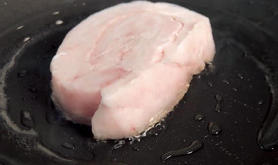
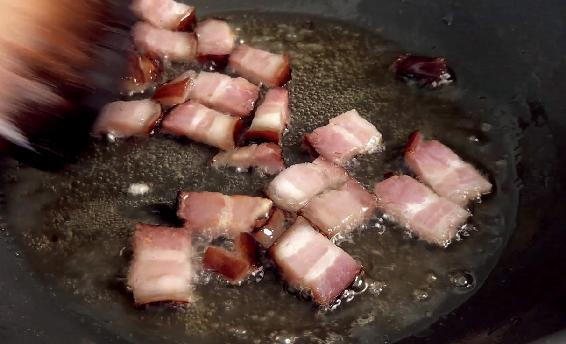
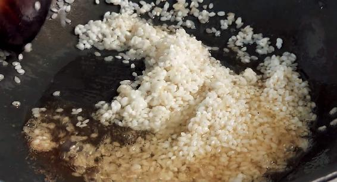
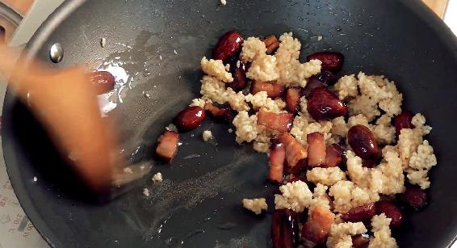
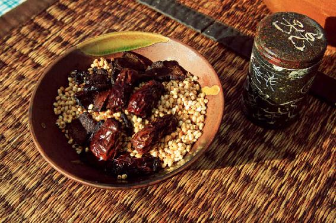
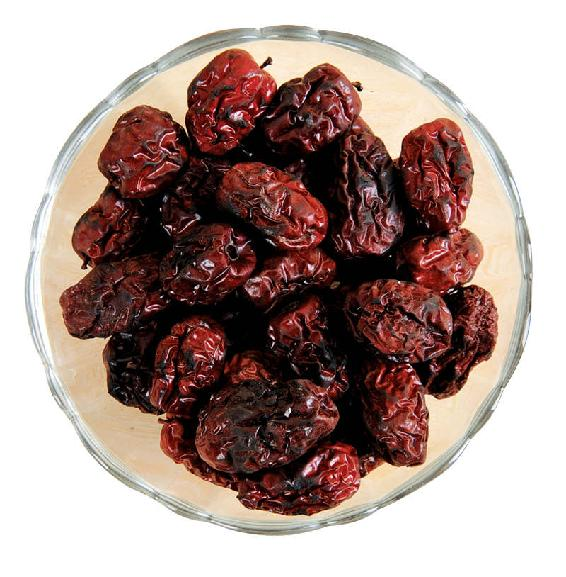
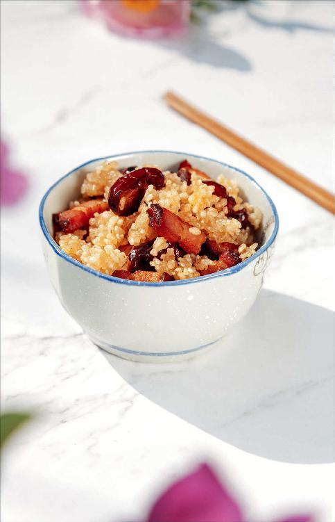

大寒节气是二十四节气中最后一个节气，过完大寒这半个月就是立春。
从冬至开始进入数九天，到了小寒数过了三九，而大寒就是数四九的时候。
三九、四九是一年中最冷的时候，所以小寒、大寒也是一年中气温最低的时候。
为什么冬天马上要过去的时候反而有寒？小寒、大寒的寒来自何处呢？是来自地气。
冬至的时候，虽然太阳直射点离北半球最远，但大地还有余温，因为大地的降温有一个滞后的过程。到了小寒和大寒节气之间，大地的温度才降到最低点，这时候气温降到最冷，而且不同地域，小寒、大寒节气时的气温还不一样。
在内陆地区，往往是小寒时，气温就已经降到一年中最低点了。内陆地区大地降温特别快，而在东部沿海地区和南方地区，往往是大寒的时候，气温降到一年中的最低点，因为海洋是一个大的“空调”，它对气温有调节作用，所以近海地区的降温会慢一些。
在东部地区和南方地区的朋友要注意：大寒是一年中气温最低的时候，而且这些地区的寒往往还带有一点点的湿，寒湿是您要特别注意防范的。
其实，单纯的寒气是比较好解决的，只要保暖就行了，但寒和湿加在一起就不好办了。湿气遇到寒气就会凝结成冰，一旦寒湿进入我们身体内就会非常顽固，不容易把它去掉。所以在大寒节气的时候不仅要进补，要暖身，还要提前排出身体中的湿气。
如果您在小寒节气的时候，天天坚持吃糯米红豆饭，那大寒时，您就可以放心地来大补御寒了。
“小雪而物咸成，大寒而物毕藏，天地之功终矣。”大寒节气是冬藏的完成阶段，是到交一年养生作业的时候了。这一年身体养得好不好，到开春就见分晓。所以要抓紧这剩下的十五天，好好地内调外养，静候春天。
1.今天吃糯米红豆饭，明天吃消寒糯米饭
如果您觉得体内的湿气还没有排尽，或者是您所在的地方空气比较潮湿，我建议您在大寒节气的时候，继续吃小寒节气的糯米红豆饭。
因为小寒是一个节，它可以管整整一个月，大寒是一个气，叫作中气，它管的是半个月，所以，如果小寒节气的糯米红豆饭您喜欢吃，可以继续吃。
如果您是特别怕冷的朋友，可以在大寒节气这十五天专吃消寒糯米饭。如果您既怕冷，又担心体内的湿气没有完全祛除，那这两个食方您可以交替吃。比如，今天吃糯米红豆饭，明天吃消寒糯米饭。
还有一个方法是我经常用的，就是把糯米红豆饭换成糯米红豆粥，每天早上喝，然后中午的时候就吃大寒节气的消寒糯米饭，这样两个食方都可以用到了。
把糯米红豆饭换成糯米红豆粥，前提是您吃糯米可以消化，脾胃功能没有问题。而对于脾胃比较虚弱、吃糯米觉得难以消化的朋友，那您还是延续糯米红豆饭原来的做法——糯米要事先用油处理，这样才能使糯米的淀粉变性，才便于消化。
2.喝银耳羹时，把糯米和银耳放在一起熬煮
还有一些朋友说：“那我每天还在坚持喝银耳羹怎么办呢？”
其实，我也是每天在喝银耳羹，因为从秋分到立春之前，是喝银耳的黄金一百天。
如果您没有时间既炖银耳羹又做节气食方的话，也可以把糯米和银耳放在一起熬煮，这样熬出来的糯米银耳羹糯糯的、软软的，味道十分不错。
3.根据自己脾胃的健康程度来决定如何吃糯米
在冬天的最后一个月，有一个很简单的进补原则：最好吃一点糯米来固肾气。
根据自己脾胃的健康程度，您可以直接吃用糯米煮的粥，也可以把糯米处理一下，做成糯米饭。
4.糯米饭加一点点红豆、陈皮
有一个小秘诀：如果您担心糯米饭吃多了以后不消化，您可以放点陈皮，不管是做糯米红豆饭，还是糯米红豆粥、消寒糯米饭，都是可以放陈皮的。只要放一点点陈皮，就可以很好地健脾、开胃、消食、解腻。
进补的时候要注意，一定要给人体内的病气留下一个排出的通道，这就有点像屋里烧暖气，如果把门窗都封闭得死死的，人就会觉得憋得受不了，这时候需要开一点点窗户，让浊气排出去。
无论怎样大补，总要配一点点泄的东西——帮助身体排病的东西，这样才不会变成呆补。比如，吃糯米饭配红豆就是为了泄；吃消寒糯米饭加一点点陈皮，也是为了泄。
这些泄的食物，在选择的时候也有讲究，比如，在小寒、大寒期间，选择帮助身体排病的辅助材料的时候，就不能选择纯粹排毒的，而是要选补中有泄的。
比如，红小豆，它不仅能排湿气，有泄的作用，它还能养心，有补的作用；陈皮也是，它不仅能消食、解腻、祛湿、化痰，有泄的作用，而且它还可以健脾，有补的作用。
5.小孩子特别需要吃消寒糯米饭
消寒糯米饭的作用是在冬天最冷的时候给身体增加热量，以增强身体的御寒能力，所以它非常滋补。家里如果有小孩可以给他多吃点。特别是一些瘦瘦的小孩子，吃了这饭以后有助于长得壮实。
老年人就不要多吃了，大寒节气的头一两天吃上一小碗就够了。
6.猪油也是好药，怎样自己炼制又白又香的猪油？
“这个方子里的猪板油能不能换掉，用其他食材来代替？”一些吃素的朋友经常这样问。其实，大家真的不要嫌弃猪油，猪油是对身体健康很有益的东西，它能补虚、润燥、利肠胃。
我家炼猪油有一个小秘诀，能让炼出来的猪油很香又没有腥气，还更容易保存，那就是在炼猪油时，往里面加一点点陈皮。
陈皮可以先用开水泡软，然后切成丝，还有泡陈皮的水也往锅里倒一点点，用水来帮助炼油。
把猪板油切成小块放锅里，把泡过的陈皮连水一起放入，不要超过一半的高度。开火把水煮开后转小火。
炼油要有耐心，用小火慢慢地炼，一开始油会出得比较慢，后面就会很快了。如果您觉得水不够，油有点炼不出来，可以再往锅内加少许的植物油，通过植物油把猪油炼出来。
等到猪板油都炼干了，变成黄色的油渣，就可以关火起锅。把油渣捞出来，猪油晾凉以后放容器里，它会慢慢凝固。放在温度低的地方，或者冰箱保存都可以。油渣不要扔掉，从小我们是把油渣拌点糖直接吃，又香又甜。也可以用来炒菜。
读者评论：消寒糯米饭真的太香了
singing_qq：糯米泡的时间短，炒得不软，放了点水焖熟了，但真的好香。
英子：小时候一到冬天最冷的时候，老人就会做消寒糯米饭，不过他们会加上点花椒和一些嫩嫩的豌豆，真的太香了，每次都会吃上两三碗。
玉兔：老师，消寒糯米饭很好吃。我原本身体不太好，这一年跟着老师养生，现在身体好了很多，谢谢老师。
鲜丰大冷面护心肉锅：消寒糯米饭好吃，非常适合我这种怕冷的体质。
消寒糯米饭
原料：糯米2两（100克），红枣10个，腊肉1两（50克），猪板油、陈皮少许（这是一家人一天的量）。

做法：
1.提前把糯米泡两小时，让它泡涨，泡涨后会比原来的生糯米大将近1倍。把糯米沥干水分（尽量多晾一会儿，让水汽蒸发掉），否则糯米下锅的时候会导致油花四溅，容易被烫到。

2.把腊肉切片，红枣掰开，去核备用。陈皮用水泡软。猪板油切成丁，放锅里，加入陈皮和泡陈皮的水，用小火慢慢炼出油。等猪板油丁全都变成油渣漂了上来，拿漏勺把油渣和陈皮渣捞出来。

3.锅里留下一点猪油，放入腊肉，把腊肉的油给煸出来，把腊肉盛出备用。

4.放入糯米，因为炒的是生糯米，油多一点没有关系，但油要是少了糯米就容易煳锅。翻炒时手不能停，一停糯米就会黏结在一起。

5.炒到糯米九成熟的时候（锅里要保证有一点余油），把红枣放进去一起炒，炒到红枣皮变焦黑时，放入煸好的腊肉，再翻炒几下，拌匀起锅。
允斌叮嘱：
1.消寒糯米饭的用量和比例，可以根据自己的喜好和家人的胃口来调整。腊肉也会出油，而且腊肉的肥瘦是不确定的，所以炼猪板油的量您可以根据腊肉的肥瘦来定。如果实在把握不好，也可以多炼一点，剩下了可以留起来做菜。
2.炼油的油渣可以留着，切一点青椒跟油渣一起炒，可以做成一道很好吃的菜。很多人小时候可能都吃过猪油渣拌白糖，香香甜甜的，是小孩子很喜欢的零食，当然这个只适合小孩子或者年轻人吃，老年人最好少吃。
3.腊肉一般是有肥有瘦的，稍微煸一下油就会出来了，这样腊肉吃起来就不会腻，而且腊肉的香味、咸味也浸到了猪油中。
4.做这道饭的时候就不需要再放盐了。腊肉煸好之后盛出来备用。这时候您就可以往锅里放糯米了，记住一定要多放点油，这样才能把糯米炒熟，因为炒的是生糯米，油多一点没有关系，但油要是少了糯米就容易煳锅。
5.怎么判断糯米是九成熟呢？刚开始的时候糯米颜色是发白的，炒着炒着它就会变得越来越透明，等到糯米一粒一粒都晶莹剔透发亮时，糯米就是九成熟了。
炒好糯米后，锅里要保证有一点余油，然后把掰开的红枣放进去一起炒。红枣要炒到红枣皮有一点发黑的样子，因为红枣皮炒黑后，有健胃的作用。
6.炒好的消寒糯米饭趁热吃是最好的，因为它的油比较多，如果凉了再吃，会有点腻。
到了大寒节气，一天之中，什么时间段吃消寒糯米饭比较好呢？
您可以在早上或者中午的时候吃这道饭。晚上则不太建议您吃，因为晚上要吃得清淡，吃得少，而消寒糯米饭的营养特别丰富，不太适合晚上吃。
如果您只有晚上下班以后才有时间做这道饭的话，我建议您吃完这道饭后，最好要给肠胃留至少三小时的消化时间，三小时后才能去睡觉。如果是小孩，您尽量早给他吃饭，最好是在他睡觉三小时之前吃。
如果做不到三小时的间隔，又非常想吃消寒糯米饭怎么办呢？饭后泡一杯陈皮水喝，有助于消化这碗饭的油腻。
有些朋友患了感冒、咳嗽，或者是身体哪里不舒服，不清楚自己可不可以进补。
您要记住，在患急性病期间，比如，感冒咳嗽、痰多或者是支气管炎发作，凡是吃进补的食方都要谨慎。如果有痰，吃消寒糯米饭可能会使痰更多。所以一般来说，年轻人和小孩咳嗽不要吃。
但有一种老年人，他们长期久咳、虚咳，而且干咳无痰，是可以吃的。

女性朋友在生理期可不可以吃呢？没问题的。
孕妇可不可以吃呢？一般来说，怀孕在三个月以上，就可以放心地吃。但如果是在怀孕三个月内，有孕吐反应的朋友，吃这道饭可能会有一点腻，这时候暂时不要吃它。
产妇吃这道消寒糯米饭是没问题的。
老年人也可以少吃一点消寒糯米饭，如果吃完之后觉得有一点不消化，可以喝一点陈皮水。
如果孩子在吃消寒糯米饭时贪嘴，多吃了一碗，觉得顶住了，特别不消化，怎么办呢？这时可以把大蒜拍碎了，煮一点大蒜水给孩子喝，一会儿他就舒服了。
因为大蒜能很好地解除吃食物引起的积滞，而且它对吃糯米过多引起的积滞特别管用。以前在写到端午节吃粽子的食方时，我曾经说过，端午节吃粽子不小心吃多了就喝大蒜水。
有些朋友问：“红枣炒焦后发黑会不会产生致癌物质？”
这个您不用担心。红枣既补血又暖身，把它稍微地炒焦一点点，为的是让它能够护胃，帮助消化，同时不会生寒湿。

如果是肉类炒煳了，它会产生致癌物质。但红枣皮主要是纤维素和微量的淀粉，炒焦黑之后不会产生致癌物质，反而会产生一种煳化的物质，这种物质带有一点苦味，可以帮助胃来消化，还有护胃的功效。
我曾经推荐过一道茶方——整个冬天都可以喝的金丝焦枣茶，就是把红枣炒黑之后冲泡而成的。这道养生茶取的就是红枣被炒焦之后的药性，和平时人们喜欢吃的锅巴是同样的道理。锅巴也是焦煳的，而焦煳的锅巴有很好的促进消化的作用。小孩子如果胃口不好，平时煮饭的时候，您不妨有意识地多给孩子吃点锅底的锅巴。
有些朋友说：“腊肉是不是不如新鲜的肉好啊？”其实腊肉和新鲜的肉相比，它们的功效各有不同。腊肉由于经过腌制，肉类中的蛋白质被分解成多种氨基酸，吃起来更鲜、更香，而且更容易消化，容易被人体吸收。
如果您是吃素的朋友，这道消寒糯米饭可以不放动物油，不放腊肉，这不会太影响它的功效，只是会削弱一点补益的作用。这道饭最主要的材料还是糯米，糯米是固肾气的，在大寒节气吃，能帮助身体封固，抵御寒冷，特别是抵御自下而上的地气的寒。
红枣和糯米加在一起是补上加补，将它们稍微处理一下，让它们变得不那么滋腻，再加上陈皮泄的作用，这样搭配起来，就补中有泄，身体既能全面地进补，又能给病气留下一个排出的通道。
大寒节气，虽然是寒气至大至极的时候，但物极必反，寒到极点也就表明天气要回暖了。大寒之后就是立春，冬去春回，春天是生发之际，是不宜大补的，所以大寒节气是我们一年中最后一次大补的机会，请您一定要珍惜。
